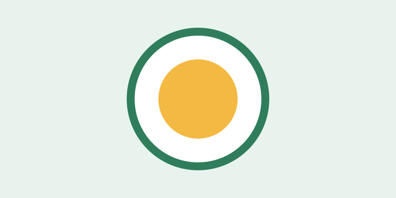

Prato Cheio
Alimentação

Distribuímos refeições balanceadas três vezes por semana e cestas básicas mensais para famílias cadastradas.
- Local: Salão comunitário do Centro
- Horário: terças, quintas e sábados, 11h às 14h
- Precisamos de: cozinheiros, auxiliares e motoristas